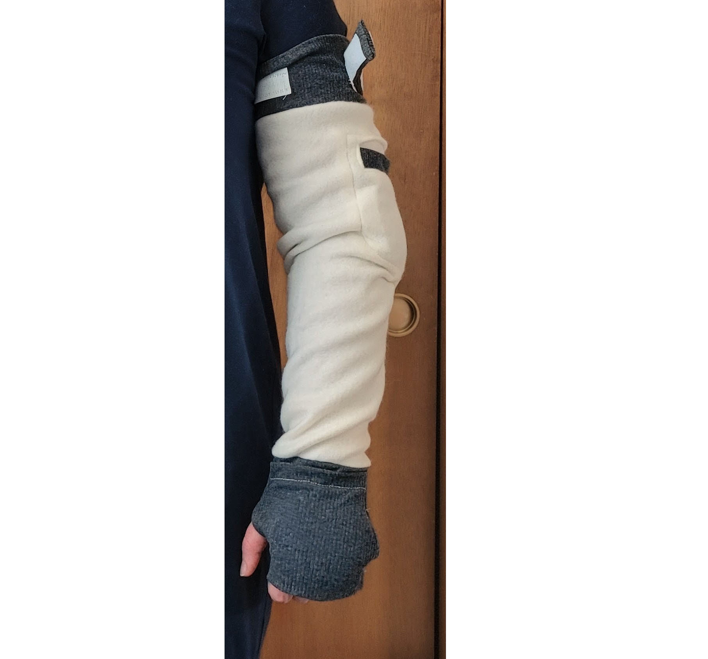
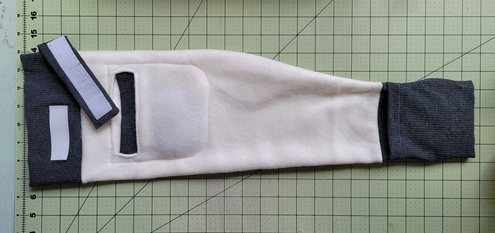
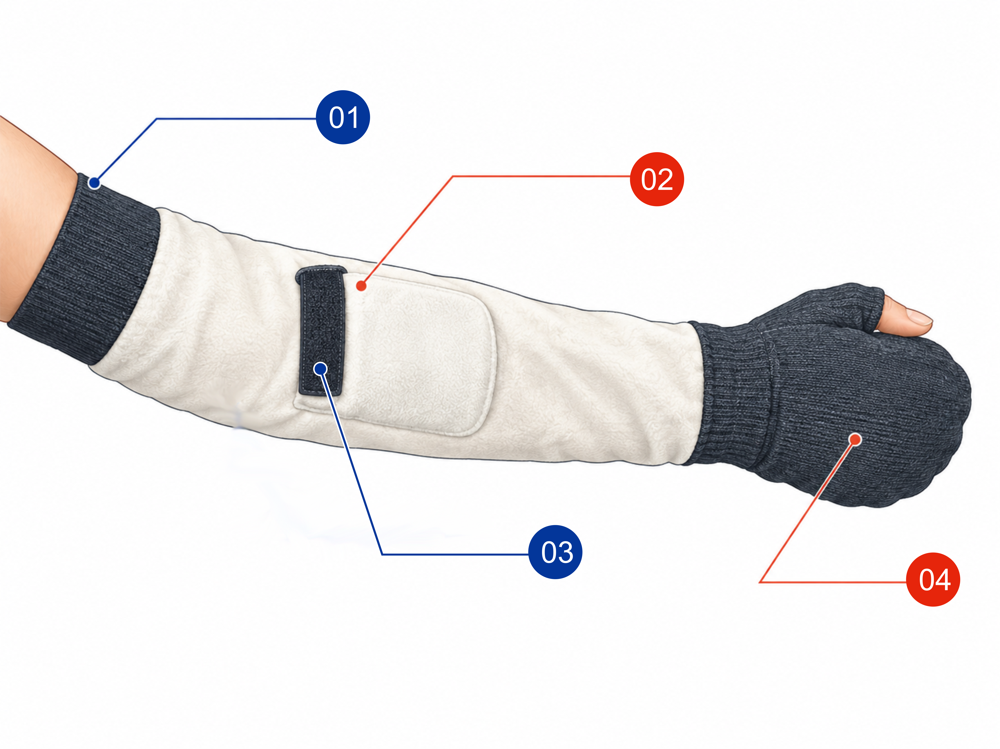

01
Worn on the arm
The sleeve surrounds the arm and extends over the hand, leaving the thumb accessible in the pictured design.
The WARM UP Vein Enhancer Sleeve is designed to warm the arm and hand before blood draws or IV placement—while keeping patient comfort in focus.
Meet the sleeve
A comfortable warming sleeve with practical details for clinical use. The two views below show how it is worn and how the sleeve is laid out.

The sleeve surrounds the arm and extends over the hand, leaving the thumb accessible in the pictured design.

A close view of the soft sleeve body, heat-pack pouch and hook-and-loop fastening used to secure the fit.
Product anatomy
A diagram-led view of the key sleeve features, with each component called out for quick reference.

Illustrative diagram for feature identification; refer to the supplied product for exact construction.
Wraps comfortably around the arm.
Provides a place for compatible heat packs, following the pack and facility instructions.
Helps secure the sleeve around the arm.
Extends warming coverage over the hand while leaving the thumb accessible in the pictured design.
How it works
The sleeve is intended to support warming before a blood draw or IV placement. Follow clinical protocols and the heat-pack manufacturer's instructions.
Place the sleeve around the arm and adjust the fastening for a comfortable, secure fit.
Position an appropriate heat pack in the pouch, using the product and facility safety instructions.
When ready, remove or reposition the sleeve as needed and proceed according to clinical protocol.
Clinical use
WARM UP brings together a practical warming layer and a patient-focused approach to preparation for venipuncture.
Explore supporting research ↗A warming option to consider during preparation for sample collection.
Designed for use before peripheral IV catheter placement.
A soft textile layer intended to make pre-procedure warming more comfortable.
The brief describes the sleeve as a patient-kept item that may be reused during an inpatient stay.
*Use, cleaning, reuse and heat-pack procedures should follow the facility's infection-prevention and safety protocols.
Research & reading
Research has explored dry and moist heat application in relation to peripheral IV insertion and venipuncture. These references provide context; they do not establish that this specific sleeve guarantees a clinical outcome.
Jisha K., Latha S., Gincy Joseph. Study of heat application and feasibility of peripheral intravenous cannulation.
Bibliographic details as supplied in the project brief.
Regina M. Fink et al. Research in a hematology-oncology outpatient population.
View PubMed record ↗Kae Yasuda et al. A quasi-experimental study on moist and dry heat approaches for peripheral IV catheterization.
Read the study ↗Eva Suchitra and Ranjini Srinivasan. Randomized controlled trial concerning children with difficult intravenous access.
Journal of Specialists in Pediatric Nursing, 25(1), e12273.
References are provided for informational context. Follow current clinical guidance, institutional policies, patient-specific assessment and product safety instructions.
WARM UP · Vein Enhancer Sleeve
Explore how a simple warming sleeve may fit into a patient-focused preparation routine.
Review product details ↑